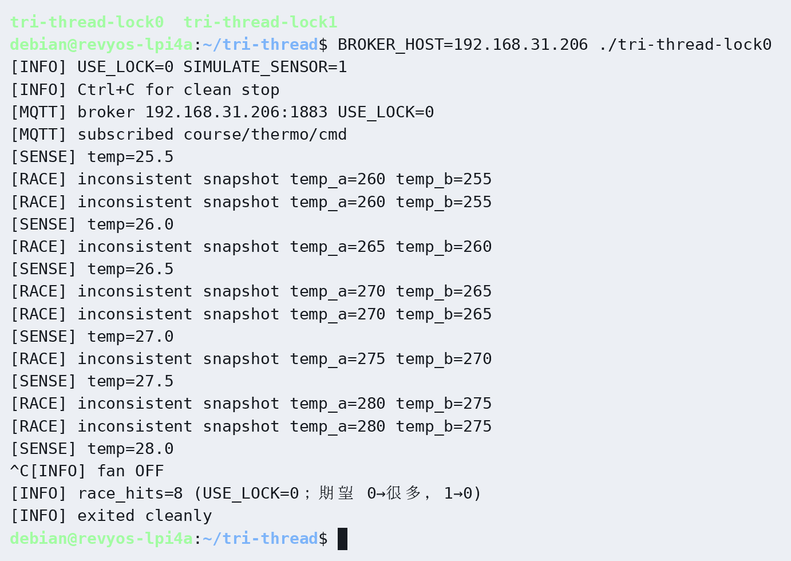
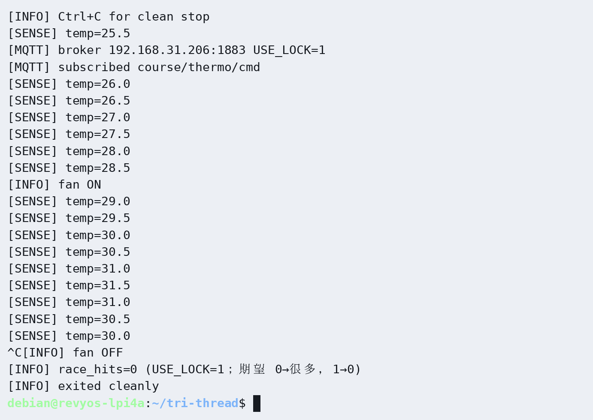

RISC-V Linux 嵌入式编程技术 · 第六章
本章实验 · 两个实验
本章两个实验一览
第六章只要两个实验：实验一纯软件，把「丢更新」和 ThreadSanitizer 报告练清楚；实验二是主实验，在荔枝派 4A 上跑三线程产品骨架（无锁必现 [RACE] → 加锁修好 → MQTT → 干净停）。
| 实验 | 练什么 | 器材 | 源码目录 |
|---|---|---|---|
| 实验一 race-demo + TSan |
无锁计数丢更新；TSan 指出抢同一变量的两行 | 无 | code/race-demo/ |
| 实验二 三线程协同 |
采集∥控制∥MQTT；USE_LOCK 0→1；Ctrl+C 关风扇 |
风扇/继电器（SIMULATE 可先不接 DHT） | code/tri-thread/ |
建议：先完成实验一并保存 TSan 报告，再进实验二。race-demo 故意无锁，不要抄进 tri-thread 的产品路径；板上验收以
USE_LOCK 1 为准。
实验一 · race-demo + TSan
目的：用「很多线程同时给同一计数器加一」亲眼看到最终计数偏小，再用 TSan 指出具体是哪两行在抢。主机或板端均可；下面摘录来自板端。
$ cd chapters/ch06/code/race-demo $ make && ./race-demo expect=400000 got=215946 RACE(lost updates)
主机跑 TSan 前若启动失败，先执行 sudo sysctl vm.mmap_rnd_bits=28（板端能直接跑则可跳过）。
$ make tsan && ./race-demo
WARNING: ThreadSanitizer: data race
Read of size 8 ... by thread T2:
#0 bump_racy .../main.c:24
Previous write of size 8 ... by thread T1:
#0 bump_racy .../main.c:26
SUMMARY: ThreadSanitizer: data race .../main.c:24 in bump_racy
本实验成功判据：有「计数偏小」记录；有完整 TSan 报告；能指出抢变量的两行。
RACE实验二 · 三线程协同（主实验）
打开 chapters/ch06/code/tri-thread/。Broker 用 BROKER_HOST（主机先 hostname -I）。脚手架默认 USE_LOCK 0：采集把同一次温度拆成 temp_a/temp_b 两步写并留空窗，控制线程读到不一致就打印 [RACE]。
-
先
USE_LOCK 0，跑 10–20 秒，应反复出现：[RACE] inconsistent snapshot temp_a=275 temp_b=270
退出时race_hits远大于 0。 -
改为
USE_LOCK 1重编再跑：无[RACE]，race_hits=0；风扇按阈值动作。 -
编译运行（板端原生或主机交叉）：
$ cd chapters/ch06/code/tri-thread $ make clean && make $ BROKER_HOST=<主机局域网IP> ./tri-thread # 或：make CROSS_COMPILE=riscv64-ruyisdk-linux-gnu- && scp …
-
MQTT / 干净停：主机
mosquitto_pub … -t course/thermo/cmd -m 'set high 30'，板端见[MQTT] cmd payload=...；Ctrl+C 后风扇关并exited cleanly。
实机摘录（USE_LOCK=1）：
[INFO] USE_LOCK=1 SIMULATE_SENSOR=1 [MQTT] subscribed course/thermo/cmd [INFO] fan ON [MQTT] cmd payload=set high 30 [INFO] race_hits=0 (USE_LOCK=1；期望 0→很多，1→0) [INFO] exited cleanly
[RACE]；加锁后 race_hits=0 并干净退出
[RACE] inconsistent snapshot
race_hits=0，Ctrl+C 干净停验收
| 实验 | 项 | 通过条件 | □ |
|---|---|---|---|
| 一 | 丢更新 | race-demo 最终计数明显小于期望 | |
| 一 | TSan | 报告已保存，能指出抢变量的两行 | |
| 二 | 无锁 | USE_LOCK 0 出现 [RACE] 且 race_hits>0 | |
| 二 | 加锁 | USE_LOCK 1 无 [RACE]，风扇阈值正常 | |
| 二 | MQTT | 下行或上行至少一项可演示 | |
| 二 | 干净停 | Ctrl+C 后风扇关，进程退出 |
完成标志：上表全部勾选。本骨架供综合项目复用。